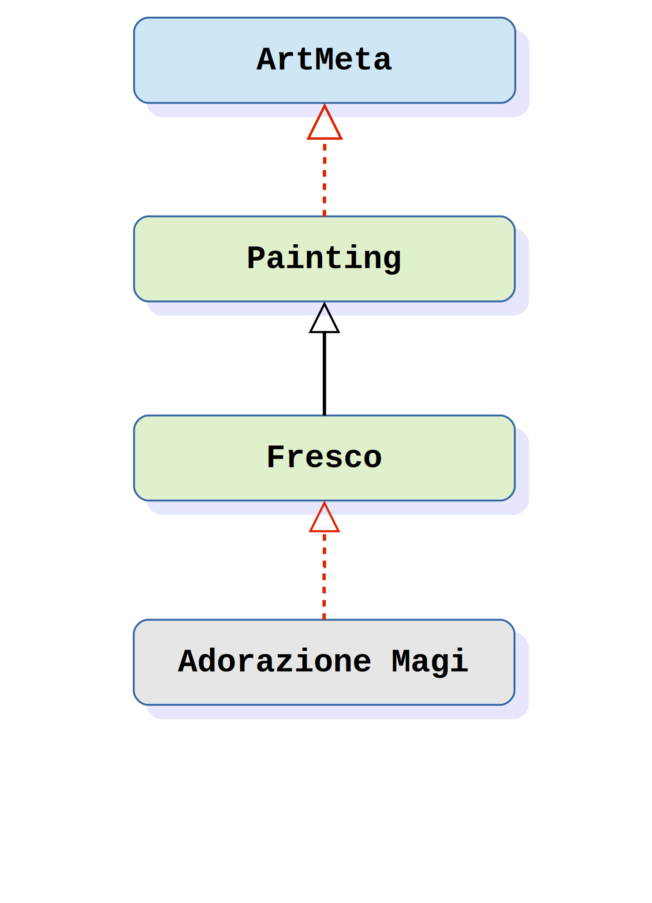

Marco Buttu, PyCon Italia 6
In computer science, an object is a location in memory having a value and possibly referenced by an identifier. An object can be a variable, a data structure, or a function. In the class-based object-oriented programming paradigm, object refers to a particular instance of a class where the object can be a combination of variables, functions, and data structures.
>>> class MyClass: # By default metaclass=type
... a = 33
...
>>> class MyClass(metaclass=type): # Explicit definition
... a = 33
...
>>> MyClass = type('MyClass', (), {'a': 33}) # No __prepare__()
>>> class MyMetaclass(type): pass
...
>>> # To create a class, we can directly call MyMetaclass
>>> MyClass = MyMetaclass('MyClass', (), {})
>>>
>>> # We can also indicate MyMetaclass in the class definition
>>> class MyClass(metaclass=MyMetaclass): pass
...
>>> type(MyClass) is MyMetaclass
True
>>> class SingletonMeta(type):
... def __call__(cls, *args, **kwargs):
... if not hasattr(cls, '_instance'):
... cls._instance = super().__call__(*args, **kwargs)
... return cls._instance
...
>>> class MyClass(metaclass=SingletonMeta): pass
...
>>> c1 = MyClass()
>>> c2 = MyClass()
>>> c1 is c2
True
>>> class ArtMeta(type): pass
...
>>> class Painting(metaclass=ArtMeta): pass
...
>>> class Fresco(Painting): pass
...
>>> adorazione_magi = Fresco()
>>> isinstance(adorazione_magi, Fresco)
True
>>> isinstance(adorazione_magi, Painting)
True
>>> isinstance(adorazione_magi, ArtMeta)
False

>>> issubclass(int, object)
True
>>> issubclass(list, object)
True
>>> class MyClass: pass
...
>>> issubclass(MyClass, object)
True
>>> issubclass(type, object)
True
>>> issubclass(object, object)
True

>>> type(int) is type
True
>>> type(list) is type
True
>>> type(object) is type
True
>>> type(type) is type
True
>>> import sys
>>> module_type = type(sys)
>>> type(module_type) is type
True

>>> import sys
>>> isinstance(sys, object) # Modules are objects
True
>>> isinstance(abs, object) # Functions are objects
True
>>> class MyClass: pass
...
>>> isinstance(MyClass, object) # Classes are objects
True
>>> isinstance(object, object)
True

>>> class MyClass:
... pass
...
>>> MyClass.__name__
'MyClass'
>>> MyClass().__name__
Traceback (most recent call last):
...
AttributeError: 'MyClass' object has no attribute '__name__'
How come MyClass has the attribute __name__ but MyClass() has not?
>>> '__name__' in type.__dict__
True
>>> '__name__' in MyClass.__dict__
False
>>> hasattr(MyClass, '__name__') # The right way
True
>>> isinstance(MyClass, type)
True
>>> isinstance(MyClass(), type)
False
# If obj is not a class:
obj.foo # -> Is type(obj).__dict__['foo'] a descriptor?
# If obj is a class
obj.foo # -> Is obj.__dict__['foo'] a descriptor?